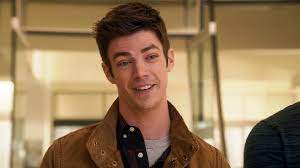
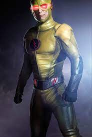
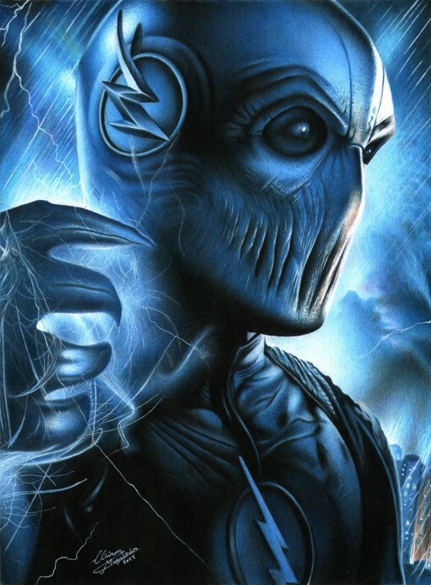
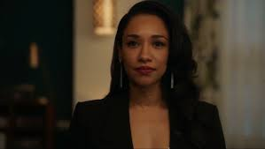
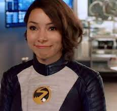

Barry Allen

Biografia de Berry Allen
Quando criança Barry tinha mãe e pai, porém em uma noite, ele ouviu um barulho de coisas quebrando em baixo da escada, ele desceu as escadas e viu um vulto de raios vermelhos e amarelos e sua mãe no meio. Depois do incidente na sua casa o seu pai Hanry Allen foi preso injustamente por assasinato, e foi para ancasa de um policial Jow Weasty, onde passou sua vida com a sua irmã Iris Weasty, ele cresceu e se formou na faculdade, e ele examina cenas de crimes junto com Jow Weasty, até que o laboratório STAR criou um acelerador de particulas e esse acelerador de particulas explodiu, ele foi atingido por um raio, ficou três meês em coma no laboratório STAR, então ele começou a sentir que podia fazer as coisas muito mais rápido que qualquer um, depois de testes ele ganhou um uniforme de Cisco Ramon (um dos cientistas dos Laboratórios STARS).

Ele descobriu quem era o homem de amarelo, aquele que matou sua mãe, em uma linha do tempo, que foi criada por ele mesmo no futuro, o Flash Reverso, ele mandou o Flash reverso para a sua dimensão de volta.

Porém ao voltarno tempo, ele colocou o mundo em perigo novamente, dessa vez um novo vilão surgindo, e mais uma vez ele corre para impedir, o novo vilão éo Zoom da terra 2, um velocista do mal, que sepassou por amigo de Barry, após derrotar o Zoom

Após várias confusões por causa do Zoom, que capturou a Keitlin e levou pro esconderijo e revelou sua identidade, ele era o flash da terra 2, mas por causa de traumas de infancias, ele escolheu ser o Zoom
Um novo velocista apareceu o Savitar, que foi criado por ele mesmo, depois de criar o ponto de ignição Savitar Deus da velocidade

Depois de mais uma viagem no tempo, ele se encontrou com ele mesmo, algo que não poderia acontecer, então os amigos dele da viagem no tempo descartaram ele. O plano de Savitar era matar a Iris Weasty para queele renasça na terra do verdadeiro Flash.

Ao derrotar savitar ele quase destruiu acidade, pois tirou um velocista que estava preso na prisão dos velocistas, onde não pode ficarvazio, então eleentrou no buraco da velocidade para impedir a destruição.
Após isso seus amigos conseguirão tirar eleda prisão colocando velocidade na prisão , só que ao fazer isso ele expôs o mundo mais uma vez em perigo, só que o vilão era um professor, que era um cientista muito esperto o Pensador ou Clifford DeVoe

Ele queria apagar a memória de todos para que ele possa ensinaralgo aos humanos, causando o esquecimento, mas Barry o Interviu destruindo o satélite que ele ia usar para isso, mas um outro velocista ajudou ele a filha dele que também viajou no tempo, a Nora West-Allen da terra 3 conhecida como XS.

Resumindo com minhas palavras.
A série "The Flash" émuito bom, tem momentos que o Barry passa com a sua familia, o Flash aparece muitas vezes, é uma série que dá pra assistir em familia, já que é uma série de heróis, então tem muita ação, por mais que todosfalam que o Barry, na primeira temporada tinha motivo pra lutar, mas conforme vai passando a temporada, Barry fica se culpando por tudo, mas eu ainda irei asssistir. Eu escrevi até aqui, pois foi até onde eu assisti.
Voltar a Página inicial